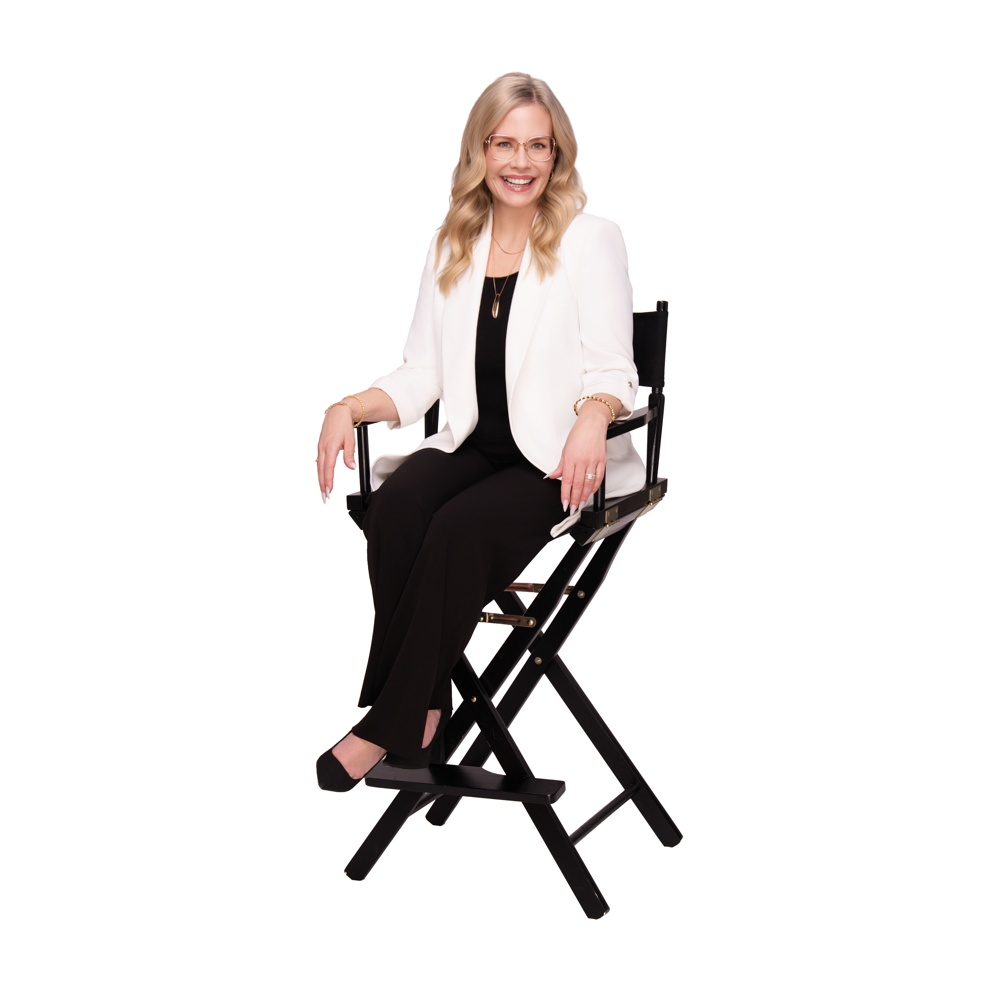

Principle 01
Clarity follows commitment
You decide first, then the path sharpens. Waiting for clarity is how capable people stay still.
Clean decisions, protected with standards, movement built from commitment — not more noise, not more waiting.
The decisions you keep. The standards you hold when no one is watching. The place where you stop negotiating with yourself and start moving.
Decision-Led Leadership is internal clarity made visible — clean commitment, movement before certainty, momentum built on self-trust instead of busy urgency.

Decision Drag is the unnamed pattern — overthinking, open loops, delayed follow-through. It looks like discernment. It feels like wisdom. But left unnamed, it leaks momentum, trust, and time.
You decide first, then the path sharpens. Waiting for clarity is how capable people stay still.
Unfinished decisions drain leadership bandwidth — silently, steadily, and without permission.
What you protect is what compounds. Lower the standard once, and the cost multiplies.
Not more information, not more reflection, not more time. Through action.
How you lead yourself shapes every other room you lead.
Decision-Led Leadership applies across arenas because the core issue is human, not industry-specific.
Identity, relationships, and the decisions no one else sees — the ones that shape everything else.
Building under pressure with clarity and standards, not reaction and compromise.
Leading people, priorities, and pace without hesitation or internal negotiation.
Mentorship, values, effort-based leadership, and duplication without compromise.
At higher levels of responsibility, Decision Drag looks like discernment — but it quietly caps your leadership. The longer you circle, the more you pay in lost momentum, diluted trust, and compound delay.
This work changes that pattern. Not with more information, but with a framework that makes clean, committed movement the default.
Name the pattern. See how you decide under pressure. Then decide what changes.
Take The Decision Code